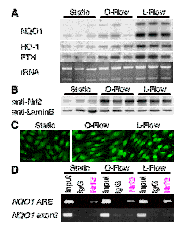
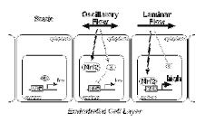

研究内容

動脈硬化症の予防を目指して
動脈硬化症は、動脈壁が局所的に肥厚し、血流の停滞を引き起こす病気です。本疾患は炎症性疾患の1つで、炎症巣浸潤マクロファージが酸化LDLを貪食した後に泡沫化し、繊維化が促進されることによって血管壁の肥厚が起こります。このため、炎症反応を抑制することは、動脈硬化発症抑制に対して効果的であると考えられます。
炎症反応にはプロスタグランジン（PGs）が関与することが知られています。シクロオキシゲナーゼ（COX）は、アラキドン酸からプロスタグランジンを合成する酵素で、恒常的に発現しているCOX-1と、炎症時に誘導されるCOX-2が知られています。また、主に中枢神経系に発現するCOX-3が、最近報告されました。炎症反応時のCOX-2の活性化は、二峰性であることが知られており、初期には炎症促進作用を持つPGE2が産生されますが、終息期には炎症抑制作用をもつ15-deoxy-D12、14-prostaglandin J2（15d-PGJ2）が産生されます。最も一般的な非ステロイド性抗炎症薬 (NSAIDs : Non-Steroidal Anti-Inflammatory Drugs) は、COX阻害活性を持っており、PGE2の産生を抑えることで炎症を抑制しています。
我々は以前、Nrf2遺伝子欠損マウスにおいて、急性炎症の遷延化が観察されることを発見しました。我々の解析により、15d-PGJ2がNrf2を活性化すること、また15d-PGJ2による抗炎症作用がNrf2を介することが明らかとなりました。その作用機序を明らかにすることにより、新たな炎症抑制・動脈硬化予防に対するアプローチを提唱できる可能性があります。マクロファージは炎症制御に重要な細胞の1つですが、15d-PGJ2およびNrf2の標的遺伝子の発現がマクロファージに観察されたことから、Nrf2はマクロファージにおいて、炎症に対して防御的に働くことが考えられました。
一方、血管内皮細胞も炎症制御に重要な細胞の1つであり、この細胞における細胞接着因子の発現は、炎症巣への炎症細胞浸潤を促進します。血管内皮細胞は血管の内側を覆う一層の細胞で、直接血液と接しているため、常に血流に起因するずり応力（シアストレス）を受けています。血流は、血管がまっすぐな部位ではLaminar Flowと呼ばれる一方向性の流れですが、血管が曲がった部分や分岐している部分では血流が乱れ、振幅性のOscillatory FlowやDisturbed Flowと呼ばれる流れになります。動脈硬化巣が血管の分岐点および屈曲部に多く観察されること、また培養細胞を用いたin vitroモデル実験における遺伝子発現変化の解析から、Laminar Flowは炎症抑制作用を、またOscillatory Flowは炎症促進作用を発揮すると考えられています。
Laminar Flowが内因性抗炎症物質である15d-PGJ2およびその前駆体であるPGD2を誘導することが過去に報告されていました。そこで我々は、Laminar Flowが、15d-PGJ2/Nrf2経路を介して抗炎症作用を発揮するのではないかという仮説をたて、実験を行いました。ヒト大動脈内皮細胞（HAEC）を用いて、培養液を循環させることによりシアストレスをかけるin vitroモデル実験を行った結果、炎症抑制性のLaminar Flow（L-Flow）は複数のNrf2標的遺伝子をNrf2依存的に誘導しましたが、炎症促進性のOscillatory Flow（O-Flow）は誘導しませんでした。阻害剤を用いた実験の結果、L-FlowによるNrf2活性化機構に15d-PGJ2が部分的ではあるが関与することが明らかとなりました。この解析中に，O-FlowはNrf2標的遺伝子を誘導しないにも関わらず、Nrf2蛋白質の核内蓄積を誘導していることが発見されました。クロマンチン免疫沈降実験の結果、O-FlowではKeap1による分解機構からの脱抑制はおこっているが、何らかのメカニズムによりNrf2の活性化がDNA結合レベルで抑制されていることが明らかとなりました。 O-FlowはNrf2活性をDNA結合レベルで阻害することにより炎症促進に働き、動脈硬化巣形成などを助長している可能性が考えられました。
 Nrf2の標的遺伝子の1つであるヘムオキシゲナーゼ-1（HO-1）は、坑動脈硬化作用を持つことが、遺伝子改変マウスを用いた研究により示されています。現在我々は、Nrf2およびHO-1がどのように抗炎症作用を発揮するのか、また、Nrf2の活性化が動脈硬化予防に効果的であるのかを、遺伝子改変マウスを用いた個体レベルおよび培養細胞などを用いた試験管レベルでの実験により検討しています。